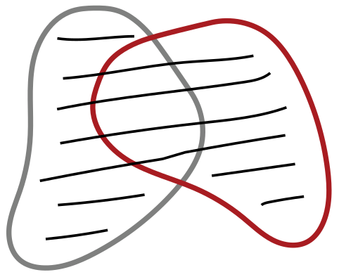
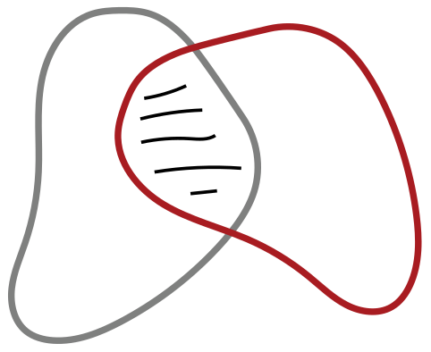
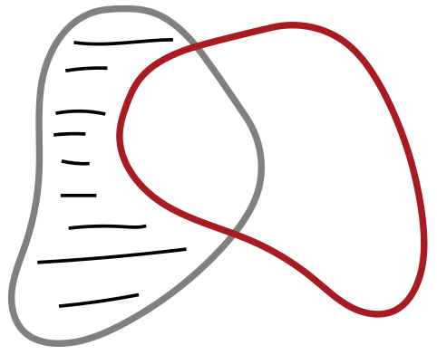
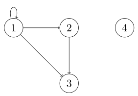
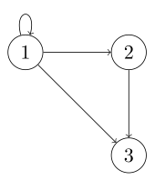
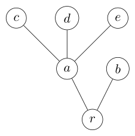

मुक्त तर्कशास्त्र — संच आणि संबंध
मुक्त तर्कशास्त्र
संच आणि संबंध
मराठी आवृत्ती · दोन संपूर्ण प्रकरणे
मूळ ग्रंथ: Open Logic Project, The Open Logic Text.
गोठवलेली मूळ आवृत्ती:
9620cc73f9c8e0ad003c514a5d3748f29611c4c0.
हे प्रकाशन संच आणि संबंध या प्रकरणांचे आहे: मूळ 722 विभागांपैकी OLP-0004 ते OLP-0019, एकूण 16 विभाग. उर्वरित 706 विभागांचे काम अपूर्ण आहे. संपूर्ण मराठी ग्रंथाचे काम सुरू आहे.
Codex कडून यंत्रानुवाद; स्रोताशी तुलना आणि यांत्रिक तपासण्या केल्या आहेत. स्वतंत्र मानवी संपादनाचा दावा केलेला नाही. काही तांत्रिक संज्ञा तात्पुरत्या आहेत.
मूळ मजकूर आणि हे रूपांतर: Creative Commons Attribution 4.0. मूळ घटकांचे स्वतंत्र परवाने लागू राहतात.
1 संच
1.1 विस्तारात्मकता
वस्तूंचा समूह एकच वस्तू म्हणून विचारात घेतला, की त्याला संच म्हणतात. संच बनवणाऱ्या वस्तूंना त्या संचाचे घटक किंवा सदस्य म्हणतात. हा या संचाचा घटक असेल, तर आपण असे लिहितो; नसेल, तर असे लिहितो. ज्या संचात एकही घटक नसतो, त्याला रिक्त संच म्हणतात आणि तो “” या चिन्हाने दर्शवतात.
आपण संच कसा निर्दिष्ट करतो, त्यातील घटक कोणत्या क्रमाने मांडतो किंवा तेच घटक किती वेळा मोजतो, याला महत्त्व नसते. त्यात कोणते घटक आहेत, एवढेच महत्त्वाचे असते. ही गोष्ट आपण पुढील तत्त्वात नेमकेपणाने मांडतो.
व्याख्या 1.1.1 (विस्तारात्मकता). आणि हे संच असतील, तर तेव्हा आणि केवळ तेव्हाच, जेव्हा मधील प्रत्येक घटक हा चाही घटक असतो, आणि उलटही.
विस्तारात्मकतेमुळे काही चिन्हपद्धती वापरणे योग्य ठरते. सर्वसाधारणपणे, , …, या वस्तू दिलेल्या असतील, तर म्हणजे ज्यातील घटक हे आहेत तो विशिष्ट संच होय. येथे “तो विशिष्ट” या शब्दांवर भर आहे, कारण विस्तारात्मकतेनुसार असा एकच संच असू शकतो. विस्तारात्मकतेमुळे पुढील समानताही योग्य ठरते:
म्हणजेच, संचांचा विचार करताना त्यातील घटक कोणत्या क्रमाने किंवा किती वेळा निर्दिष्ट केले आहेत, याला महत्त्व नसते.उदाहरण 1.1.2. काही वस्तू दिलेल्या असतील, तर त्या एकत्र करून त्यांचा संच बनवता येतो. उदाहरणार्थ, रिचर्डच्या भावंडांच्या संचात एक व्यक्ती आहे, आणि तो असा लिहिता येईल. पेक्षा लहान धन पूर्णांकांचा संच आहे; पण तो किंवा अगदी असाही लिहिता येतो. विस्तारात्मकतेनुसार हे सर्व एकच संच आहेत. कारण मधील प्रत्येक घटक हा चा (आणि चाही) घटक आहे, आणि उलटही.
अनेकदा संचातील सर्व घटक यांना समान असलेला एखादा गुणधर्म सांगून आपण संच निर्दिष्ट करू. त्यासाठी पुढील संक्षिप्त चिन्हपद्धती वापरू: . येथे हा असा गुणधर्म दर्शवतो की, ची संचातील घटक मध्ये गणना होण्यासाठी त्यात तो गुणधर्म असला पाहिजे.
उदाहरण 1.1.3. आपल्या उदाहरणातील हा संच पुढीलप्रमाणेही निर्दिष्ट करता आला असता:
उदाहरण 1.1.4. एखादी संख्या तिच्या स्वतःखेरीज इतर सर्व धन विभाजकांच्या बेरजेइतकी असेल तेव्हा आणि केवळ तेव्हाच तिला परिपूर्ण म्हणतात (हे विभाजक म्हणजे त्या संख्येला निःशेष भाग जाणाऱ्या, पण तिच्याशी समान नसलेल्या संख्या). उदाहरणार्थ, ही परिपूर्ण संख्या आहे, कारण तिचे असे विभाजक , आणि आहेत, आणि . खरे तर, पेक्षा लहान धन पूर्णांकांपैकी हीच एकमेव परिपूर्ण संख्या आहे. म्हणून विस्तारात्मकतेचा उपयोग करून आपण असे म्हणू शकतो:
उजवीकडील चिन्हलेखनाचे वाचन असे करतो: “ ही परिपूर्ण संख्या आहे आणि अशा सर्व चा संच.” संच कसा निर्दिष्ट केला आहे, याला संचाचा विचार करताना महत्त्व नसते, ही गोष्ट वरील समानता स्पष्ट करते. अधिक सर्वसाधारणपणे, असणाऱ्या सर्व चा संच नेहमी एकच असतो, याची विस्तारात्मकता खात्री देते. त्यामुळे याला असणाऱ्या सर्व चा तो विशिष्ट संच म्हणणे विस्तारात्मकतेमुळे योग्य ठरते.संच समान असल्याचे दाखवण्याची पद्धत विस्तारात्मकतेमुळे मिळते: हे दाखवण्यासाठी, असेल तेव्हा देखील असते, आणि असेल तेव्हा देखील असते, हे दाखवा.
सराव 1.1. जास्तीत जास्त एकच रिक्त संच असतो हे सिद्ध करा. म्हणजे, आणि या संचांत एकही घटक नसेल, तर हे दाखवा.
1.2 उपसंच आणि घातसंच
आपल्याला अनेकदा संचांची तुलना करावी लागेल. तुलना करण्याचा एक सरळ प्रकार असा आहे: एका संचातील प्रत्येक वस्तू दुसऱ्या संचातही असते. ही स्थिती पुरेशी महत्त्वाची असल्यामुळे तिच्यासाठी आपण नवीन चिन्हपद्धतीची ओळख करून घेऊ.
व्याख्या 1.2.1 (उपसंच). या संचातील प्रत्येक घटक हा चाही घटक असेल, तर हा चा उपसंच आहे असे म्हणतो, आणि असे लिहितो. हा चा उपसंच नसेल, तर असे लिहितो. पण असेल, तर असे लिहितो आणि हा चा उचित उपसंच आहे असे म्हणतो.
उदाहरण 1.2.2. प्रत्येक संच स्वतःचाच उपसंच असतो, आणि हा प्रत्येक संचाचा उपसंच असतो. सम नैसर्गिक संख्यांचा संच हा नैसर्गिक संख्यांच्या संचाचा उपसंच आहे. तसेच, . पण हा चा उपसंच नाही.
उदाहरण 1.2.3. ही संख्या पूर्णांकांच्या संचाचा घटक आहे, तर सम संख्यांचा संच हा पूर्णांकांच्या संचाचा उपसंच आहे. मात्र, एखादा संच दुसऱ्या संचाचा घटक आणि उपसंच दोन्हीही असू शकतो. उदाहरणार्थ, आणि देखील.
विस्तारात्मकतेमुळे संचांच्या समानतेचा निकष मिळतो: तेव्हा आणि केवळ तेव्हाच, जेव्हा मधील प्रत्येक घटक हा चाही घटक असतो, आणि उलटही. “उपसंच” या व्याख्येत याचा अर्थ या निकषाचा नेमका पहिला भाग आहे: मधील प्रत्येक घटक हा चा घटक असतो. अर्थात, आणि यांची अदलाबदल केली तरी ही व्याख्या लागू होते: तेव्हा आणि केवळ तेव्हाच, जेव्हा मधील प्रत्येक घटक हा चा घटक असतो. हाच विस्तारात्मकतेतील “आणि उलटही” हा भाग होय. दुसऱ्या शब्दांत, संच एकमेकांचे उपसंच असतील तेव्हा आणि केवळ तेव्हाच ते समान असतात, हे विस्तारात्मकतेवरून निष्पन्न होते.
प्रतिज्ञा 1.2.4. तेव्हा आणि केवळ तेव्हाच, जेव्हा आणि दोन्ही असतात.
आणखी काही उपयुक्त चिन्हपद्धतींची ओळख करून घेण्याची ही योग्य वेळ आहे. हा चा उपसंच केव्हा असतो याची व्याख्या करताना आपण “ मधील प्रत्येक घटक हा …” असे म्हटले, आणि त्या “” च्या जागी “ चा घटक असतो” असे घातले. परंतु असा आकार असणाऱ्या अभिव्यक्ती इतक्या नेहमी वापरल्या जातात की, त्यांच्यासाठी आकारिक चिन्हपद्धती उपयोगी पडेल.
व्याख्या 1.2.5. हे याचे संक्षिप्त रूप आहे. त्याचप्रमाणे, हे याचे संक्षिप्त रूप आहे.
या चिन्हपद्धतीचा उपयोग करून, तेव्हा आणि केवळ तेव्हाच, जेव्हा , असे म्हणता येते.
आता आपण एका विशिष्ट प्रकारच्या संचाचा विचार करू: दिलेल्या संचाच्या सर्व उपसंचांचा संच.
व्याख्या 1.2.6 (घातसंच). या संचाच्या सर्व उपसंचांचा मिळून जो संच बनतो, त्याला चा घातसंच म्हणतात आणि तो असा लिहितात.
उदाहरण 1.2.7. चे सर्व शक्य उपसंच कोणते? ते असे आहेत: , , , , , , , . या सर्व उपसंचांचा संच म्हणजे :
सराव 1.2. चे सर्व उपसंच लिहा.
सराव 1.3. मध्ये घटक असतील, तर मध्ये घटक असतात हे दाखवा.
1.3 काही महत्त्वाचे संच
उदाहरण 1.3.1. आपण प्रामुख्याने ज्यातील घटक या गणिती वस्तू आहेत अशा संचांचा विचार करणार आहोत. असे चार संच इतके महत्त्वाचे आहेत की त्यांना विशिष्ट नावे दिलेली आहेत:
हे सर्व अनंत संच आहेत; म्हणजेच, प्रत्येकात अनंत घटक आहेत.या संचांतून पुढे जाताना आपण आपल्या संग्रहात आणखी संख्या समाविष्ट करत असतो. खरे तर, हे स्पष्ट असावे: कारण प्रत्येक नैसर्गिक संख्या पूर्णांक असते; प्रत्येक पूर्णांक परिमेय असतो; आणि प्रत्येक परिमेय संख्या वास्तव असते. त्याचप्रमाणे, हेही स्पष्ट असावे, कारण हा पूर्णांक आहे पण नैसर्गिक संख्या नाही, आणि ही परिमेय संख्या आहे पण पूर्णांक नाही. , म्हणजे परिमेय नसलेल्या काही वास्तव संख्या आहेत, ही गोष्ट तितकी सहज स्पष्ट होत नाही.
कधीकधी आपण धन पूर्णांकांचा संच आणि फक्त पहिल्या दोन नैसर्गिक संख्या असणारा संच यांचाही उपयोग करू.
उदाहरण 1.3.2 (चिन्हमाला). आणखी एक लक्षवेधी उदाहरण म्हणजे या वर्णमालेवरील सांत चिन्हमालांचा संच : मधील घटकांचा कोणताही सांत अनुक्रम हा वरील चिन्हमाला असतो. प्रत्येक वर्णमालेसाठी, वरील चिन्हमालांमध्ये आपण रिक्त चिन्हमाला हिचाही समावेश करतो. उदाहरणार्थ,
ही मधील “अक्षरांनी” बनलेली चिन्हमाला असेल, तर तिची लांबी आहे असे म्हणतो आणि असे लिहितो.उदाहरण 1.3.3 (अनंत अनुक्रम). कोणत्याही संचासाठी आपण मधील घटक यांच्या अनंत अनुक्रमांचा संच याचाही विचार करू शकतो. अनंत अनुक्रम म्हणजे वस्तूंची एका दिशेने अनंत लांब जाणारी यादी; यादीतील प्रत्येक वस्तू चा घटक असते.
1.4 संयोग आणि छेद
1.1 मध्ये आपण गुणधर्मानुसार संचांची व्याख्या करणे, म्हणजे या आकाराची व्याख्या करणे, पाहिले. येथे आपण एखादा गुणधर्म वापरतो; या गुणधर्मात आधीच व्याख्या केलेल्या संचांचा उल्लेख असू शकतो. उदाहरणार्थ, आणि हे संच असतील, तर या संचात किंवा मधील घटक असणाऱ्या सर्व वस्तू येतात. म्हणजेच, आणि मधील घटक एकत्र करणारा हा संच आहे. 1.1 मध्ये दाखवल्याप्रमाणे त्याचे चित्र काढता येते; ठळक केलेला भाग आणि या दोन संचांतील घटक एकत्र दर्शवतो.

संच एकत्र करणारी ही क्रिया अतिशय उपयुक्त आहे आणि वारंवार वापरली जाते. म्हणून तिला आपण आकारिक नाव आणि चिन्ह देतो.
व्याख्या 1.4.1 (संयोग). आणि या दोन संचांचा संयोग असा लिहितात. तो , किंवा दोन्ही संचांतील घटक असणाऱ्या सर्व वस्तूंचा संच आहे.
उदाहरण 1.4.2. तेच घटक किती वेळा आले आहेत याला महत्त्व नसल्याने, दोन संचांत सामाईक घटक असेल, तर त्यांच्या संयोगात तो घटक एकदाच येतो. उदाहरणार्थ, .
संच आणि त्याचा एखादा उपसंच यांचा संयोग म्हणजे मोठा संचच: .
संचाचा रिक्त संचाशी संयोग हा मूळ संचाशी समान असतो: .
सराव 1.4. असेल, तर हे सिद्ध करा.
संयोगाच्या “द्वैत” क्रियेचाही विचार करता येतो. या क्रियेत असे सर्व घटक घेतले जातात की जे मधील घटक आणि मधीलही घटक आहेत, आणि त्यांचा संच बनवला जातो. या क्रियेला छेद म्हणतात. तिचे चित्र 1.2 प्रमाणे काढता येते.

व्याख्या 1.4.3 (छेद). आणि या दोन संचांचा छेद असा लिहितात. तो आणि या दोन्ही संचांतील घटक असणाऱ्या सर्व वस्तूंचा संच आहे.
दोन संचांचा छेद रिक्त असेल, तर त्यांना विभक्त म्हणतात. याचा अर्थ, त्यांच्यात सामाईक घटक नसतात.उदाहरण 1.4.4. दोन संचांत सामाईक घटक नसतील, तर त्यांचा छेद रिक्त असतो: .
दोन संचांत सामाईक घटक असतील, तर त्यांचा छेद म्हणजे त्या सर्वांचा संच: .
संच आणि त्याचा एखादा उपसंच यांचा छेद म्हणजे लहान संचच: .
कोणत्याही संचाचा रिक्त संचाशी छेद रिक्त असतो: .
सराव 1.5. असेल, तर हे काटेकोरपणे सिद्ध करा.
दोनपेक्षा अधिक संचांचा संयोग किंवा छेदही बनवता येतो. हे सर्वसाधारणपणे हाताळण्याची एक सुटसुटीत पद्धत पुढीलप्रमाणे आहे: ज्या सर्व संचांचा संयोग (किंवा छेद) करायचा आहे, ते सर्व एका संचात एकत्र केले आहेत असे समजा. मग या संचाच्या किमान एका घटक मध्ये असणाऱ्या सर्व वस्तूंचा संच म्हणजे मूळ सर्व संचांचा संयोग अशी व्याख्या करता येते. तसेच, या संचाच्या प्रत्येक घटक मध्ये असणाऱ्या सर्व वस्तूंचा संच म्हणजे त्यांचा छेद अशी व्याख्या करता येते.
व्याख्या 1.4.5. हा संचांचा संच असेल, तर म्हणजे मधील घटक यांत असणाऱ्या घटक यांचा संच:
व्याख्या 1.4.6. हा संचांचा संच असेल, तर म्हणजे मधील सर्व घटकांत सामाईक असणाऱ्या वस्तूंचा संच:
उदाहरण 1.4.7. असे समजा. मग आणि .
सराव 1.6. हा संच असेल आणि असेल, तर हे दाखवा.
, , …या संचांच्या अनुक्रमासाठीही हेच करता येईल:
संचांसाठी निर्देशांक संच दिलेला असेल, म्हणजे एखादा संच असा असेल की, प्रत्येक साठी आपण चा विचार करत असू, तर पुढील संक्षिप्त रूपेही वापरता येतात:
शेवटी, मध्ये असणारे पण मध्ये नसणारे सर्व घटक यांच्या संचाचा विचार करायचा असू शकतो. त्याचे चित्र 1.3 प्रमाणे काढता येते.

व्याख्या 1.4.8 (फरक). संचांचा फरक म्हणजे मधील असे सर्व घटक की जे मधील घटक नाहीत, यांचा संच. म्हणजेच,
सराव 1.7. असेल, तर हे सिद्ध करा.
1.5 जोड्या, क्रमित घटकसमूह आणि कार्तीय गुणाकार
संचांतील घटकांना क्रम नसतो, हे विस्तारात्मकतेवरून निष्पन्न होते. म्हणून क्रम दर्शवायचा असेल, तर आपण क्रमित जोड्या वापरतो. अक्रमित जोडी मध्ये क्रमाला महत्त्व नसते: . क्रमित जोडीमध्ये मात्र क्रम महत्त्वाचा असतो: असेल, तर .
संच सिद्धांतात क्रमित जोड्यांचा विचार कसा करावा? दोन क्रमित जोड्यांचे पहिले घटक समान असतील आणि दुसरे घटकही समान असतील तेव्हा आणि केवळ तेव्हाच त्या जोड्या समान असतात, ही कल्पना जपणे आवश्यक आहे. म्हणजेच:
वीनर–कुराटोव्स्की यांच्या व्याख्येने संच सिद्धांतात क्रमित जोड्यांची व्याख्या करता येते.व्याख्या 1.5.1 (क्रमित जोडी). .
सराव 1.8. 1.5.1 वापरून, तेव्हा आणि केवळ तेव्हाच, जेव्हा आणि दोन्ही असतात, हे सिद्ध करा.
क्रमित जोडीची व्याख्या निश्चित केल्यावर तिच्या साहाय्याने आणखी संचांची व्याख्या करता येते. उदाहरणार्थ, कधीकधी दोनपेक्षा अधिक वस्तूंचे क्रमित अनुक्रम हवे असतात: त्रिके , चतुष्के इत्यादी. त्रिक म्हणजे ज्याचा पहिला घटक स्वतःच क्रमित जोडी आहे अशी विशिष्ट क्रमित जोडी असे मानता येते: म्हणजे . चतुष्कांसाठीही हेच लागू होते: म्हणजे , आणि असेच पुढे. सर्वसाधारणपणे आपण क्रमित -घटकसमूह यांचा उल्लेख करतो.
क्रमित जोड्यांचे, किंवा इतर क्रमित -घटकसमूहांचे, काही संच उपयुक्त ठरतील.
व्याख्या 1.5.2 (कार्तीय गुणाकार). आणि हे संच दिलेले असतील, तर त्यांचा कार्तीय गुणाकार याची व्याख्या अशी करतात:
उदाहरण 1.5.3. आणि असतील, तर त्यांचा गुणाकार असा आहे:
उदाहरण 1.5.4. हा संच असेल, तर चा स्वतःशी गुणाकार हा असाही लिहितात. तो असणाऱ्या सर्व जोड्यांचा संच आहे. सर्व त्रिकांचा संच असतो, आणि असेच पुढे. पुढील पुनरावर्ती व्याख्या देता येते:
सराव 1.9. मधील सर्व घटक लिहा.
प्रतिज्ञा 1.5.5. मध्ये घटक आणि मध्ये घटक असतील, तर मध्ये घटक असतात.
Proof. मधील प्रत्येक घटक साठी, या आकाराचे घटक असतात. असे मानू. असेल तेव्हा असल्यामुळे . पण असेल, तर ; म्हणून त्यात घटक असतात.
हे चित्ररूपाने पाहण्यासाठी मधील घटक जाळीच्या स्वरूपात मांडा:
सर्व वेगवेगळे आहेत आणि सर्व वेगवेगळे आहेत. त्यामुळे या जाळीतील कोणत्याही दोन जोड्या समान नाहीत, आणि त्यांची संख्या आहे. ◻सराव 1.10. वरील गणिती विगमनाने असे दाखवा की, प्रत्येक साठी, मध्ये घटक असतील, तर मध्ये घटक असतात.
उदाहरण 1.5.6. हा संच असेल, तर वरील शब्द म्हणजे मधील घटक यांचा कोणताही अनुक्रम. असा अनुक्रम म्हणजे मधील घटक यांचा -घटकसमूह असे मानता येते. उदाहरणार्थ, असेल, तर “” या अनुक्रमाचा हे त्रिक म्हणून विचार करता येतो. शब्दांना, म्हणजे चिन्हांच्या अनुक्रमांना, संगणकशास्त्रात अत्यंत महत्त्व आहे. संकेतानुसार, मधील घटक यांना आपण लांबीचे अनुक्रम मानतो, आणि याला लांबीचा अनुक्रम मानतो. मग वरील सर्व शब्दांचा संच असा आहे:
1.6 रसेलची विरोधापत्ती
विस्तारात्मकतेमुळे ही चिन्हपद्धती असणाऱ्या सर्व च्या त्या विशिष्ट संचासाठी वापरणे योग्य ठरते. मात्र, विस्तारात्मकतेमुळे प्रत्यक्षात फक्त पुढील विचार योग्य ठरतो. ज्याचे सदस्य सर्व आणि केवळ असणाऱ्या वस्तू आहेत असा संच असेल, तर असा एकच संच असतो. दुसऱ्या शब्दांत: एखादा निश्चित केल्यावर, हा संच अस्तित्वात असल्यास तो एकमेव असतो.
पण ही अट महत्त्वाची आहे! प्रत्येक गुणधर्मापासून गुणधर्माधारित संचरचना करता येतेच असे नाही. म्हणजेच, काही गुणधर्म संचांची व्याख्या करत नाहीत. सर्वच गुणधर्मांनी संचांची व्याख्या होत असती, तर आपल्याला थेट व्याघातांना सामोरे जावे लागले असते. याचे सर्वांत प्रसिद्ध उदाहरण म्हणजे रसेलची विरोधापत्ती.
संच हे इतर संचांचे घटक असू शकतात; उदाहरणार्थ, या संचाचा घातसंच हा संचांनी बनलेला असतो. म्हणून एखादा संच दुसऱ्या संचाचा घटक आहे का, असा प्रश्न विचारणे किंवा त्याचा शोध घेणे अर्थपूर्ण आहे. संच स्वतःचाच सदस्य असू शकतो का? संचाच्या कल्पनेत असे काही दिसत नाही की ज्यामुळे ही शक्यता नाकारली जाईल. उदाहरणार्थ, सर्व संच मिळून वस्तूंचा समूह बनत असेल, तर त्या सर्वांना एका संचात एकत्र करता येईल असे वाटू शकते; तो म्हणजे सर्व संचांचा संच. तो स्वतः एक संच असल्यामुळे सर्व संचांच्या संचाचा घटक असेल.
स्वतःला घटक म्हणून न सामावणाऱ्या, म्हणजे स्वतःचे सदस्य नसणाऱ्या संचांचा गुणधर्म विचारात घेतल्यावर रसेलची विरोधापत्ती उद्भवते. स्वतःला घटक म्हणून न सामावणाऱ्या सर्व संचांचा एक संच आहे असे आपण मानले, तर काय होईल? असा
संच अस्तित्वात आहे का? तो अस्तित्वात नसतो हे आपण सिद्ध करू शकतो.प्रमेय 1.6.1 (रसेलची विरोधापत्ती). असा कोणताही संच नाही.
Proof. अस्तित्वात असेल, तर तेव्हा आणि केवळ तेव्हाच, जेव्हा ; हा व्याघात आहे. ◻
ही सिद्धता अधिक सावकाश पाहू. अस्तित्वात असेल, तर आहे की नाही हा प्रश्न अर्थपूर्ण आहे. खरोखर आहे असे समजा. आता, स्वतःचे घटक नसणाऱ्या सर्व संचांचा संच अशी ची व्याख्या केली होती. त्यामुळे असेल, तर मध्ये स्वतःच चा व्याख्यक गुणधर्म नसतो. पण हा गुणधर्म असणारेच संच मध्ये असतात. म्हणून हा चा घटक असू शकत नाही; म्हणजेच . परंतु हा चा घटक आहे आणि नाही, असे दोन्ही होऊ शकत नाही; म्हणून व्याघात मिळतो.
या गृहीतकामुळे व्याघात येत असल्याने मिळते. पण यामुळेही व्याघात येतो! कारण असेल, तर मध्ये स्वतःच चा व्याख्यक गुणधर्म असतो; म्हणून स्वतःचे सदस्य नसणाऱ्या इतर सर्व संचांप्रमाणे हा चा घटक असेल. आणि पुन्हा, चा घटक नसणे आणि असणे या दोन्ही गोष्टी एकत्र शक्य नाहीत.
रसेलची विरोधापत्ती टाळणारा, म्हणजे अस्तित्वात आहे हा विसंगत दावा न करणारा संच सिद्धांत कसा मांडायचा? त्यासाठी संच केव्हा अस्तित्वात असतात (आणि केव्हा नसतात) हे सांगणाऱ्या अगदी नेमक्या अटी देणारी स्वयंसिद्धके मांडावी लागतील.
या प्रकरणात आराखडा दिलेला संच सिद्धांत असे करत नाही. तो खरोखरच अनौपचारिक आहे. त्यातून एवढेच सांगितले जाते की संच विस्तारात्मकतेचे पालन करतात आणि काही संच दिलेले असतील, तर त्यांचा संयोग, छेद इत्यादी बनवता येतात. संच सिद्धांत यापेक्षा अधिक काटेकोरपणे विकसित करणे शक्य आहे.
2 संबंध
2.1 संच म्हणून संबंध
1.3 मध्ये आपण काही महत्त्वाच्या संचांचा उल्लेख केला: , , , . यांपैकी काही संचांतील घटक यांच्यातील काही लक्षवेधी संबंध तुम्हाला आठवत असतील. उदाहरणार्थ, या प्रत्येक संचावर एक सर्वमान्य क्रमसंबंध असतो. तसेच, प्रत्येक वस्तूचा फक्त स्वतःशी आणि इतर कशाशीही नसणारा एकरूप असण्याचा संबंध असतो. पुढे आपल्याला आणखी अनेक लक्षवेधी संबंध भेटतील, आणि शक्य संबंध तर त्याहूनही अधिक आहेत. त्यांचा आढावा घेण्यापूर्वी मात्र, संबंधांकडे एका विशिष्ट प्रकारचे संच म्हणून पाहता येते, हे आपण दाखवू.
यासाठी 1.5 मधील दोन गोष्टी आठवा. प्रथम, क्रमित जोडी ही संकल्पना: आणि दिलेले असतील, तर बनवता येते. येथे घटकांचा क्रम महत्त्वाचा असतो. म्हणून असेल, तर . (याची अक्रमित जोड्यांशी, म्हणजे -घटक संचांशी, तुलना करा: तेथे .) दुसरे म्हणजे, कार्तीय गुणाकार ही संकल्पना आठवा: आणि हे संच असतील, तर बनवता येतो. तो आणि असणाऱ्या सर्व जोड्यांचा संच आहे. विशेषतः, हा मधून घेतलेल्या सर्व क्रमित जोड्यांचा संच आहे.
आता एका संचावरील विशिष्ट संबंध पाहू: नैसर्गिक संख्यांच्या या संचावरील -संबंध. असणाऱ्या संख्यांच्या सर्व जोड्यांचा संच विचारात घ्या, म्हणजे,
ही संख्या पेक्षा लहान असणे आणि ही जोडी ची सदस्य असणे यांचा निकटचा संबंध आहे, तो असा: खरे तर, कोणतीही माहिती न गमावता हा संच म्हणजेच वरील -संबंध आहे, असे आपण मानू शकतो.त्याचप्रमाणे, संख्यांमधील कोणत्याही संबंधासाठी चा एक उपसंच तयार करता येतो. उलट, संख्यांच्या जोड्यांचा कोणताही संच दिला असेल, तर त्याला अनुरूप संख्यांमधील एक संबंध असतो: चा शी तो संबंध तेव्हा आणि केवळ तेव्हाच असतो, जेव्हा . यावरून पुढील व्याख्या समर्थित होते:
व्याख्या 2.1.1 (द्विपदी संबंध). या संचावरील द्विपदी संबंध म्हणजे चा एक उपसंच. हा वरील द्विपदी संबंध असेल आणि असतील, तर यासाठी आपण कधी कधी (किंवा ) असे लिहितो.
उदाहरण 2.1.2. नैसर्गिक संख्यांच्या जोड्यांचा हा संच अशा द्विमितीय सारणीत मांडता येतो:
येथे कर्णावरील नोंदी ठळक केल्या आहेत, कारण त्या जोड्यांचा बनलेला चा उपसंच, म्हणजे, हा वरील एकरूपता संबंध आहे. (एकरूपता संबंध वारंवार वापरला जातो, म्हणून कोणत्याही संचासाठी अशी व्याख्या करू.) कर्णाच्या वर असलेल्या सर्व जोड्यांचा उपसंच, म्हणजे, हा लहान असण्याचा संबंध आहे, म्हणजे तेव्हा आणि केवळ तेव्हाच, जेव्हा . कर्णाच्या खाली असलेल्या जोड्यांचा उपसंच, म्हणजे, हा मोठे असण्याचा संबंध आहे, म्हणजे तेव्हा आणि केवळ तेव्हाच, जेव्हा . आणि यांचा संयोग असा लिहू; तो लहान किंवा समान असण्याचा संबंध आहे: तेव्हा आणि केवळ तेव्हाच, जेव्हा . त्याचप्रमाणे, हा मोठे किंवा समान असण्याचा संबंध आहे. , , आणि हे क्रम नावाच्या विशिष्ट प्रकारचे संबंध आहेत. आणि यांचा गुणधर्म असा: कोणत्याही संख्येचा स्वतःशी किंवा संबंध नसतो (म्हणजे, सर्व साठी आणि दोन्ही असत्य असतात). हा गुणधर्म असणाऱ्या संबंधांना अपरावर्ती म्हणतात; आणि ते क्रमही असतील, तर त्यांना काटेकोर क्रम म्हणतात.क्रम आणि एकरूपता हे महत्त्वाचे व स्वाभाविक संबंध असले, तरी आपल्या व्याख्येनुसार चा कोणताही उपसंच हा वरील संबंध असतो, तो कितीही कृत्रिम किंवा ओढूनताणून बनवलेला वाटला तरीही. विशेषतः, हा कोणत्याही संचावरील संबंध असतो (हा रिक्त संबंध; कोणत्याही घटकजोडीमध्ये तो नसतो), आणि हाही वरील संबंध असतो (प्रत्येक जोडीमध्ये असणारा); त्याला सार्वत्रिक संबंध म्हणतात. तसेच, यासारखी गोष्टही संबंध ठरते.
सराव 2.1. या संचावरील संबंधाचे घटक लिहा.
2.2 तात्त्विक चिंतन
2.1 मध्ये आपण संबंधांची व्याख्या काही विशिष्ट संच म्हणून केली. येथे थांबून एक छोटासा तात्त्विक प्रश्न विचारू: अशी व्याख्या नेमके काय करते? काही सत्तामीमांसक एकरूपतेची तथ्ये आपण शोधून काढली, असा दावा आपल्याला करायचा आहे का, याबद्दल खूपच शंका आहे. उदाहरणार्थ, वरील क्रमसंबंध हा 2.1 मध्ये व्याख्यिलेला संचच निघाला, असे म्हणायचे का? अशी शंका घेण्याची तीन कारणे पुढीलप्रमाणे आहेत.
पहिले: 1.5.1 मध्ये आपण अशी व्याख्या केली. त्याऐवजी ही व्याख्या विचारात घ्या. असेल, तर . पण क्रमित जोडीची व्याख्या ऐवजी अशीही तितक्याच योग्य रीतीने करता आली असती. दोन्ही व्याख्या तितक्याच उपयोगी ठरल्या असत्या. त्यामुळे नैसर्गिक संख्यांवरील क्रमसंबंध “असण्यासाठी” आता दोन तितकेच योग्य उमेदवार आहेत:
विस्तारात्मकतेनुसार असल्याने ते दोन्ही वरील क्रमसंबंधाशी एकरूप असू शकत नाहीत. पण प्रत्यक्षात ऐवजी (किंवा उलट) हाच क्रमसंबंध आहे, असा दावा करणे मनमानीचे आणि म्हणून काहीसे अडचणीचे ठरेल. (संचसैद्धान्तिक न्यूनीकरणवादाविरुद्ध बेनासेराफ यांनी 1965 मध्ये प्रसिद्ध केलेल्या युक्तिवादाचे हे अतिशय सोपे उदाहरण आहे. आपण त्याकडे आणखी काही वेळा परत येऊ.)दुसरे: प्रत्येक संबंध एखाद्या संचाशी एकरूप मानला पाहिजे असे आपल्याला वाटत असेल, तर संचसदस्यत्वाचा हा संबंधसुद्धा एक विशिष्ट संच असला पाहिजे. तो हा संच असावा लागेल. पण हा संच अस्तित्वात आहे का? रसेलची विरोधापत्ती लक्षात घेता, असा संच अस्तित्वात आहे हा दावा सहज स्वीकारता येत नाही. खरे तर, संच सिद्धांत काटेकोरपणे स्वयंसिद्धकांवर आधारित सिद्धांत म्हणून विकसित करता येतो, आणि तो सिद्धांत या संचाचे अस्तित्व नाकारतो. म्हणून काही संबंधांना संच म्हणून वागवता येत असले, तरी संचसदस्यत्वाचा संबंध अपवादात्मक प्रकरण म्हणून घ्यावा लागेल.
तिसरे: संबंध संचांशी “एकरूप” मानताना, यासाठी असे लिहिण्याची मुभा आपण घेतली. सदस्यत्वाचा “” हा संबंध विधेय म्हणून वापरला, तर हे योग्य आहे. पण “” हे एका विशिष्ट प्रकारच्या संचाचे नाव आहे असे मानले, तर “” या व्यंजकात संचांचा निर्देश करणारी फक्त तीन एकवाची पदे राहतात: “”, “” आणि “”. अशा नावांच्या यादीतून विधान व्यक्त होऊ शकत नाही; “तो कप लेखणीधारक ते टेबल” या निरर्थक शब्दमालेइतकीच ती निष्फळ आहे. म्हणून पुन्हा, काही संबंधांना संच म्हणून वागवता येत असले, तरी संचसदस्यत्वाचा संबंध अपवादात्मक प्रकरण असला पाहिजे. (यात फ्रेगे यांच्या घोडा संकल्पनेच्या विरोधापत्तीचे एक सोपे रूप आणि विट्गेन्स्टाइन यांनी रसेल यांच्याविरुद्ध मांडलेला एक प्रसिद्ध आक्षेप एकत्र आले आहेत.)
मग यातून काय निष्पन्न होते? संख्यांवरील संबंध हे संच आहेत असे म्हणण्यात काही चूक नाही. ते म्हणण्यामागचा हेतू मात्र नीट समजून घ्यावा लागेल. आपण सत्तामीमांसक एकरूपतेचे तथ्य सांगत नाही. फक्त एवढेच नोंदवत आहोत की, काही संदर्भांत काही संबंधांना काही विशिष्ट संच म्हणून वागवता येते (आणि आपण तसे वागवणार आहोत).
2.3 संबंधांचे विशेष गुणधर्म
काही प्रकारचे संबंध इतके वारंवार आढळतात की त्यांना विशेष नावे दिली आहेत. उदाहरणार्थ, आणि हे आपापल्या प्रांतांतील घटकांना सारख्याच प्रकारे जोडतात (उदा., साठी आणि साठी ). त्यांच्यातील साम्य आणि भेद नेमके समजण्यासाठी संबंधांचे काही विशेष गुणधर्मांनुसार वर्गीकरण करू. यांपैकी काही गुणधर्मांची संयोजने विशेष महत्त्वाची ठरतात: क्रम आणि तुल्यता संबंध.
व्याख्या 2.3.1 (परावर्तिता). हा संबंध परावर्ती तेव्हा आणि केवळ तेव्हाच असतो, जेव्हा प्रत्येक साठी असते.
व्याख्या 2.3.2 (संक्रमकता). हा संबंध संक्रमक तेव्हा आणि केवळ तेव्हाच असतो, जेव्हा आणि असले, की सुद्धा असते.
व्याख्या 2.3.3 (सममिती). हा संबंध सममित तेव्हा आणि केवळ तेव्हाच असतो, जेव्हा असले, की सुद्धा असते.
व्याख्या 2.3.4 (प्रतिसममिती). हा संबंध प्रतिसममित तेव्हा आणि केवळ तेव्हाच असतो, जेव्हा आणि दोन्ही असले, की असते (दुसऱ्या शब्दांत: असेल, तर किंवा असते).
सममित संबंधात आणि नेहमी एकत्र सत्य असतात किंवा दोन्ही असत्य असतात. प्रतिसममित संबंधात आणि दोन्ही सत्य असण्यासाठी असणे आवश्यक असते. पण असताना आणि सत्य असलेच पाहिजेत, अशी अट यात नाही; फक्त त्यांना मनाई नाही. म्हणून प्रतिसममित संबंध परावर्ती असू शकतो, पण प्रत्येक प्रतिसममित संबंध परावर्ती असतोच असे नाही. तसेच, प्रतिसममित असणे आणि केवळ सममित नसणे या वेगळ्या अटी आहेत. खरे तर, एकच संबंध एकाच वेळी सममित आणि प्रतिसममितही असू शकतो (उदा., एकरूपता संबंध).
व्याख्या 2.3.5 (संयोजितता). या संबंधाला संयोजित म्हणतात, जर सर्व साठी असल्यास किंवा असते.
सराव 2.2. पुढील गुणधर्म असणाऱ्या संबंधांची उदाहरणे द्या: (a) परावर्ती आणि सममित, पण संक्रमक नाही; (b) परावर्ती आणि प्रतिसममित; (c) प्रतिसममित व संक्रमक, पण परावर्ती नाही; आणि (d) परावर्ती, सममित व संक्रमक. संख्या किंवा संच यांवरील संबंध वापरू नका.
व्याख्या 2.3.6 (अपरावर्तिता). या संबंधाला अपरावर्ती म्हणतात, जर सर्व साठी असत्य असते.
व्याख्या 2.3.7 (असममिती). या संबंधाला असममित म्हणतात, जर अशा कोणत्याही जोडीसाठी आणि दोन्ही सत्य नसतात.
लक्षात घ्या: असेल, तर वरील कोणताही अपरावर्ती संबंध परावर्ती नसतो, आणि वरील प्रत्येक असममित संबंध प्रतिसममितही असतो. तरीही, काही संबंध परावर्तीही नसतात आणि अपरावर्तीही नसतात; तसेच काही प्रतिसममित संबंध असममित नसतात.
2.4 तुल्यता संबंध
एखाद्या संचावरील एकरूपता संबंध परावर्ती, सममित आणि संक्रमक असतो. हे तिन्ही गुणधर्म असणारे संबंध वारंवार आढळतात.
व्याख्या 2.4.1 (तुल्यता संबंध). परावर्ती, सममित आणि संक्रमक असणाऱ्या या संबंधाला तुल्यता संबंध म्हणतात. मधील घटक आणि यांना -तुल्य म्हणतात, जर असते.
तुल्यता संबंधांमुळे तुल्यतावर्ग ही संकल्पना मिळते. तुल्यता संबंध प्रांताचे वेगवेगळ्या भागांत “तुकडे” करतो. प्रत्येक भागात सर्व वस्तू एकमेकींशी संबंधित असतात; भिन्न भागांतील कोणत्याही वस्तू एकमेकींशी संबंधित नसतात. काही वेळा या भागांबद्दल थेट बोलणे उपयोगी ठरते. त्यासाठी पुढील व्याख्या करू:
व्याख्या 2.4.2. हा तुल्यता संबंध असू द्या. प्रत्येक साठी, मधील चा तुल्यतावर्ग म्हणजे हा संच. नुसार चा भागाकारसंच म्हणजे , अर्थात या तुल्यतावर्गांचा संच.
पुढील निष्कर्ष तुल्यतावर्गाच्या व्याख्येला आधार देतो: तुल्यतावर्ग हे खरोखर चे विभाजन करणारे भाग असतात, हे तो सिद्ध करतो.
प्रतिज्ञा 2.4.3. हा तुल्यता संबंध असेल, तर तेव्हा आणि केवळ तेव्हाच, जेव्हा .
Proof. डावीकडून उजवीकडे जाणाऱ्या दिशेसाठी, असे समजा आणि असू द्या. व्याख्येनुसार . हा तुल्यता संबंध असल्याने . (सविस्तर सांगायचे तर: असल्याने आणि सममित असल्याने ; तसेच असल्याने आणि संक्रमक असल्याने .) म्हणून . हे कोणत्याही अशा घटकासाठी लागू असल्याने . अगदी त्याचप्रमाणे . म्हणून विस्तारात्मकतेनुसार .
उजवीकडून डावीकडे जाणाऱ्या दिशेसाठी, असे समजा. परावर्ती असल्याने , म्हणून . मग या गृहीतकामुळे सुद्धा. म्हणून . ◻
उदाहरण 2.4.4. तुल्यता संबंधांचे एक चांगले उदाहरण शेषांक अंकगणितातून मिळते. कोणत्याही , आणि साठी, ला ने भागल्यावर येणारी बाकी आणि ला ने भागल्यावर येणारी बाकी सारखी असेल, तेव्हा आणि केवळ तेव्हाच असे म्हणू. (चिन्हांत मांडायचे तर: तेव्हा आणि केवळ तेव्हाच, जेव्हा एखाद्या साठी .) मग कोणत्याही साठी हा तुल्यता संबंध असतो. मुळे नेमके भिन्न तुल्यतावर्ग मिळतात; म्हणजे मध्ये घटक असतात. ते असे: ने निःशेष भाग जाणाऱ्या संख्यांचा संच, म्हणजे ; ने भागल्यावर बाकी येणाऱ्या संख्यांचा संच, म्हणजे ; …; आणि ने भागल्यावर बाकी येणाऱ्या संख्यांचा संच, म्हणजे .
सराव 2.3. कोणत्याही साठी हा तुल्यता संबंध आहे आणि मध्ये नेमके सदस्य आहेत, हे दाखवा.
2.5 क्रम
अनेक तुलनांमध्ये आपण काही वस्तू इतर वस्तूंपेक्षा एखाद्या दृष्टीने “लहान”, “समान” किंवा “मोठ्या” आहेत असे म्हणतो. यात क्रम संबंध येतात. पण क्रमसंबंधांचे वेगवेगळे प्रकार आहेत. उदाहरणार्थ, काहींमध्ये कोणत्याही दोन वस्तूंची तुलना करता आली पाहिजे, तर इतरांमध्ये तशी अट नसते. काहींमध्ये एकरूपतेचा समावेश असतो (जसे ), तर काहींमध्ये नसतो (जसे ). येथे या प्रकारांचे वर्गीकरण उपयोगी पडेल.
व्याख्या 2.5.1 (पूर्वक्रम). परावर्ती आणि संक्रमक असणाऱ्या संबंधाला पूर्वक्रम म्हणतात.
व्याख्या 2.5.2 (अंशतः क्रम). प्रतिसममितही असणाऱ्या पूर्वक्रमाला अंशतः क्रम म्हणतात.
व्याख्या 2.5.3 (रेषीय क्रम). संयोजितही असणाऱ्या अंशतः क्रमाला पूर्ण क्रम किंवा रेषीय क्रम म्हणतात.
उदाहरण 2.5.4. प्रत्येक रेषीय क्रम अंशतः क्रमही असतो आणि प्रत्येक अंशतः क्रम पूर्वक्रमही असतो; पण यांची उलट विधाने सत्य नाहीत. वरील सार्वत्रिक संबंध परावर्ती आणि संक्रमक असल्याने तो पूर्वक्रम असतो. पण मध्ये एकाहून अधिक घटक असतील, तर सार्वत्रिक संबंध प्रतिसममित नसतो, म्हणून तो अंशतः क्रम नसतो.
उदाहरण 2.5.5. वरील अधिक लांब नसण्याचा हा संबंध पाहा: तेव्हा आणि केवळ तेव्हाच, जेव्हा . हा पूर्वक्रम (परावर्ती आणि संक्रमक) आहे, शिवाय संयोजितही आहे; पण प्रतिसममित नसल्याने अंशतः क्रम नाही. उदाहरणार्थ, आणि , पण .
उदाहरण 2.5.6. संचांच्या संचावरील हा एक महत्त्वाचा अंशतः क्रम आहे. सर्वसाधारणपणे तो रेषीय क्रम नसतो. कारण असेल आणि विचारात घेतला, तर , आणि असे दिसते.
उदाहरण 2.5.7. निःशेष विभाज्यतेचा संबंध हा रेषीय नसलेला अंशतः क्रम देतो. आणि या पूर्णांकांसाठी, म्हणजे ने ला निःशेष भाग जातो, अर्थात एखादा पूर्णांक असा असतो की . वर हा अंशतः क्रम आहे, पण रेषीय क्रम नाही: उदाहरणार्थ, आणि . वरील संबंध म्हणून पाहिल्यास विभाज्यता केवळ पूर्वक्रम आहे, कारण ती प्रतिसममित नाही: आणि , पण .
उदाहरण 2.5.8. अनुक्रमांच्या या संचावरील विस्तार संबंध असा आहे: तेव्हा आणि केवळ तेव्हाच, जेव्हा (रिक्त अनुक्रम), , किंवा आणि . असल्यास हा चा आरंभीचा खंड आहे असेही म्हणतो. वरील विस्तार संबंध अंशतः क्रम आहे, पण रेषीय क्रम नाही; उदा., असेल, तर आणि .
व्याख्या 2.5.9 (काटेकोर क्रम). काटेकोर क्रम म्हणजे अपरावर्ती, असममित आणि संक्रमक असणारा संबंध.
व्याख्या 2.5.10 (काटेकोर रेषीय क्रम). संयोजितही असणाऱ्या काटेकोर क्रमाला काटेकोर पूर्ण क्रम किंवा काटेकोर रेषीय क्रम म्हणतात.
उदाहरण 2.5.11. हा काटेकोर रेषीय क्रम याला अनुरूप रेषीय क्रम आहे. हा काटेकोर क्रम याला अनुरूप अंशतः क्रम आहे.
वरील कोणत्याही काटेकोर क्रम मध्ये कर्ण , म्हणजे सर्व जोड्या, मिळवल्यास अंशतः क्रम तयार होतो. (याला चे परावर्ती संवरण म्हणतात.) उलट, अंशतः क्रमातून काढून टाकल्यास काटेकोर क्रम मिळतो. पुढील दोन निष्कर्ष हे नेमके स्पष्ट करतात.
प्रतिज्ञा 2.5.12. हा वरील काटेकोर क्रम असेल, तर हा अंशतः क्रम असतो. शिवाय, हा काटेकोर रेषीय क्रम असेल, तर हा रेषीय क्रम असतो.
Proof. हा काटेकोर क्रम आहे असे समजा, म्हणजे आणि अपरावर्ती, असममित व संक्रमक आहे. असू द्या. परावर्ती, प्रतिसममित आणि संक्रमक आहे हे दाखवायचे आहे.
स्पष्टपणे परावर्ती आहे, कारण सर्व साठी .
प्रतिसममित आहे हे दाखवण्यासाठी व्याघात काढू. आणि असूनही आहे असे समजा. , पण असल्याने , म्हणजे असले पाहिजे. त्याचप्रमाणे . पण असममित आहे या गृहीतकाशी हे विसंगत आहे.
संक्रमकता दाखवण्यासाठी आणि असे समजा. आणि दोन्ही असतील, तर संक्रमक असल्याने . अन्यथा , म्हणजे , किंवा , म्हणजे . पहिल्या प्रकरणात गृहीतकानुसार आणि , म्हणून . दुसऱ्या प्रकरणातही त्याचप्रमाणे. प्रत्येक प्रकरणात , म्हणून संक्रमकही आहे.
“शिवाय” या भागासाठी, संयोजितही आहे असे समजा. म्हणून सर्व साठी किंवा , म्हणजे किंवा . असल्याने बाबतही हे सत्य राहते, म्हणून संयोजितही आहे. ◻
प्रतिज्ञा 2.5.13. हा वरील अंशतः क्रम असेल, तर हा काटेकोर क्रम असतो. शिवाय, हा रेषीय क्रम असेल, तर हा काटेकोर रेषीय क्रम असतो.
Proof. हे सरावासाठी ठेवले आहे. ◻
सराव 2.4. 2.5.13 याची सिद्धता द्या.
काटेकोर रेषीय क्रम विस्तारात्मकतेसारखा एक गुणधर्म पाळतात, हे पुढील सोप्या निष्कर्षातून दिसते:
प्रतिज्ञा 2.5.14. हा वरील काटेकोर रेषीय क्रम असेल, तर:
Proof. असे समजा. असेल, तर ; पण अपरावर्ती आहे याच्याशी हे विसंगत आहे. म्हणून . अगदी त्याचप्रमाणे . संयोजित असल्याने . ◻
2.6 आलेख
आलेख म्हणजे अशी आकृती की जिच्यात “गाठी” किंवा “शिखरे” (“शिखर” या शब्दाचे अनेकवचन) म्हटले जाणारे बिंदू कडांनी जोडलेले असतात. विविक्त गणित आणि संगणकशास्त्रात आलेख सर्वत्र वापरले जातात. विविध जाळ्यांसारख्या ठोस गोष्टींपासून ते निर्णयांच्या शक्य परिणामांसारख्या अमूर्त संरचनांपर्यंत अनेक संबंध आणि संरचना दर्शवण्यासाठी व त्यांचे दृश्य रूप देण्यासाठी ते अतिशय उपयोगी असतात. ग्रंथसाहित्यात आलेखांचे अनेक प्रकार आढळतात. उदाहरणार्थ, कडांना दिशा आहे की नाही, नावे आहेत की नाहीत, एखाद्या शिखरापासून त्याच शिखरापर्यंत कड असू शकते की नाही, त्याच शिखरांमध्ये अनेक कडा असू शकतात की नाहीत, इत्यादी बाबतींत हे प्रकार वेगळे असतात. दिशित आलेखांचा संबंधांशी विशेष संबंध आहे.
व्याख्या 2.6.1 (दिशित आलेख). दिशित आलेख म्हणजे शिखरांचा हा संच आणि कडांचा हा संच.
आपल्या व्याख्येनुसार आलेख म्हणजे एक संच आणि त्या संचावरील एक संबंध. अर्थात, आलेखांबद्दल बोलताना त्यांचे चित्र काढले जावे ही अपेक्षा स्वाभाविक आहे: आणि ही शिखरे बाणाने तेव्हा आणि केवळ तेव्हाच जोडून आलेख काढता येतो, जेव्हा . नुसता संबंध आणि आलेख यांतील फरक एवढाच की आलेखात शिखरांचा संचही स्पष्ट केलेला असतो, म्हणजे आलेखात एकाकी शिखरे असू शकतात. महत्त्वाचा मुद्दा असा: संचावरील प्रत्येक संबंधाकडे हा दिशित आलेख म्हणून पाहता येते; आणि उलट, या दिशित आलेखाकडे, हा संच स्पष्ट केलेला असताना, हा संबंध म्हणून पाहता येते.
उदाहरण 2.6.2. आणि असलेला हा आलेख असा दिसतो:

हा आलेख असणाऱ्या या आलेखापेक्षा वेगळा आहे; तो असा दिसतो:

सराव 2.5. या संचावरील लहान-किंवा-समान असण्याचा संबंध आलेख म्हणून पाहा आणि त्याची आकृती काढा.
2.7 वृक्ष
तर्कशास्त्राच्या सर्व शाखांत महत्त्वाची भूमिका बजावणारा अंशतः क्रमाचा एक विशिष्ट प्रकार म्हणजे वृक्ष. तर्कशास्त्राच्या प्राथमिक भागांत सांत वृक्ष येतात: उदाहरणार्थ, सूत्रे विन्यासवृक्षात विभागून समजून घेता येतात, आणि अनेक निष्पत्ती पद्धतींतील निष्पत्ती सुद्धा सांत वृक्षांच्या स्वरूपात असतात.
विधानीय आणि प्रथमस्तरीय तर्कशास्त्राच्या परिपूर्णता प्रमेयांच्या सिद्धतेतच अनंत वृक्ष येऊ लागतात; पुढे संपूर्ण गणिती तर्कशास्त्रात त्यांचा वापर होतो.
वृक्षाची संचसैद्धान्तिक संकल्पना आणि आलेख सिद्धांतातील वृक्षाची संकल्पना यांचा निकटचा संबंध आहे. एका सांत वृक्षाचे चित्र असे आहे:

सर्वांत खालचे हे शिखर मूळ आहे. व्यतिरिक्त प्रत्येक शिखराच्या लगेच खाली नेमके एक पालक शिखर आहे. पासून कडांवरून वर जात पर्यंत पोहोचता येत असेल, तर चा शी असणारा संबंध म्हणजे हा चा पूर्वज असणे, असे समजू शकतो.
वृक्षातील पूर्वज संबंध हा काटेकोर अंशतः क्रम असतो. यावरून संचसैद्धान्तिक व्याख्या सुचते. ती मांडण्यासाठी दोन संकल्पना लागतात. ने अंशतः क्रमित केलेल्या या संचातील लघुतम घटक म्हणजे असा घटक की सर्व साठी असते. एखाद्या संचाच्या प्रत्येक अरिक्त उपसंचात लघुतम घटक असेल, तर तो संच ने सुक्रमित आहे असे म्हणतात.
व्याख्या 2.7.1 (वृक्ष). वृक्ष म्हणजे अशी जोडी की हा संच असतो, हा वरील अंशतः क्रम असतो, त्याचा हा एकमेव लघुतम घटक असतो (त्याला मूळ म्हणतात), आणि सर्व साठी हा संच ने सुक्रमित असतो.
व्याख्या 2.7.2 (उत्तरवर्ती). हा वृक्ष आहे असे समजा. , असतील आणि असा कोणताही नसेल, तर हा चा उत्तरवर्ती आहे असे म्हणतो.
च्या उत्तरवर्तींना त्याची अपत्ये असेही म्हणतात. हा चा उत्तरवर्ती असेल, तर ला चा पूर्ववर्ती किंवा पालक म्हणतो.
प्रतिज्ञा 2.7.3. हा वृक्ष असेल, तर मूळ वगळता प्रत्येक ला जास्तीत जास्त एक पूर्ववर्ती असतो.
Proof. , आणि असे समजा. मग . हा संच ने सुक्रमित असल्याने त्याच्या या उपसंचाला लघुतम घटक असतो. तो स्पष्टपणे किंवा असला पाहिजे. म्हणून किंवा . आपण गृहीत धरले, म्हणून प्रत्यक्षात किंवा . शिवाय, आणि या गृहीतकांमुळे किंवा . म्हणून आणि हे दोघेही चे पूर्ववर्ती असू शकत नाहीत. ◻
व्याख्या 2.7.4. या वृक्षातील हा अनंत संच असेल, तर वृक्षाला अनंत, आणि अन्यथा सांत म्हणतात. मधील प्रत्येक ला फक्त सांत संख्येने उत्तरवर्ती असतील, तर ला सांत शाखनाचा वृक्ष म्हणतात.
व्याख्या 2.7.5 (शाखा). हा वृक्ष दिला असता, ची शाखा म्हणजे मधील अधिकतम शृंखला; म्हणजे असा संच की कोणत्याही साठी किंवा असते, आणि प्रत्येक साठी असा असतो की आणि दोन्ही असत्य असतात.
च्या सर्व शाखांचा संच दर्शवण्यासाठी आपण वापरतो.
उदाहरण 2.7.6. सांत शाखनाच्या वृक्षाचे एक प्रसिद्ध उदाहरण म्हणजे आणि यांच्या सांत अनुक्रमांचा अनंत द्विमान वृक्ष. त्याला कधी किंवा असे लिहितात आणि विस्तार संबंध ने क्रमित करतात (उदा., ). कोणत्याही द्विमान चिन्हमालेच्या शेवटी किंवा जोडून तिचा विस्तार नेहमी करता येतो. म्हणून या वृक्षात अनंत घटक असतात: प्रत्येक या घटकाला नेमके दोन उत्तरवर्ती, आणि , असतात. त्याचे मूळ म्हणजे हा रिक्त अनुक्रम.
उदाहरण 2.7.7. थोडे अधिक सर्वसाधारण उदाहरण म्हणजे नैसर्गिक संख्यांच्या सांत अनुक्रमांचा हा संच आणि त्यावरील विस्तार संबंध ; हाही वृक्ष असतो. तो स्पष्टपणे सांत शाखनाचा नाही: प्रत्येक ला अनंत उत्तरवर्ती असतात, प्रत्येक साठी एक. नुसार बंद असलेला प्रत्येक हा चा उपवृक्ष असतो. (म्हणजे असा आहे की आणि असतील, तर सुद्धा.) सर्व सांत वृक्ष चे सांत उपवृक्ष म्हणून दर्शवता येतात.
प्रतिज्ञा 2.7.8 (Kőnig यांचे उपप्रमेय). हा सांत शाखनाचा अनंत वृक्ष असेल, तर ला एक अनंत शाखा असते.
संगणनीयता सिद्धांतात वारंवार वापरले जाणारे Kőnig यांच्या उपप्रमेयाचे एक विशेष रूप, ज्याला दुर्बल Kőnig उपप्रमेय म्हणतात, असे आहे: च्या प्रत्येक अनंत उपवृक्षाला एक अनंत शाखा असते.
2.8 संबंधांवरील क्रिया
संबंधांत बदल करणे किंवा त्यांना एकत्र करणे अनेकदा उपयोगी पडते. 2.5.12 मध्ये आपण संबंधांचा संयोग पाहिला; तो म्हणजे दोन संबंधांकडे जोड्यांचे संच म्हणून पाहिल्यावर त्यांचा संयोग. त्याचप्रमाणे, 2.5.13 मध्ये संबंधांचा सापेक्ष फरक पाहिला. संबंधांवर करता येणाऱ्या आणखी काही क्रिया पुढीलप्रमाणे आहेत.
व्याख्या 2.8.1. , हे संबंध आणि हा कोणताही संच असू द्या.
चा व्युत्क्रम म्हणजे .
आणि यांचा सापेक्ष गुणाकार म्हणजे .
चे वरील मर्यादन म्हणजे .
चा वर प्रयोग म्हणजे
उदाहरण 2.8.2. हा वरील उत्तरवर्ती संबंध असू द्या, म्हणजे ; त्यामुळे तेव्हा आणि केवळ तेव्हाच, जेव्हा .
हा वरील पूर्ववर्ती संबंध आहे, म्हणजे .
म्हणजे
हा वरील उत्तरवर्ती संबंध आहे.
म्हणजे .
व्याख्या 2.8.3 (संक्रमक संवरण). हा द्विपदी संबंध असू द्या.
चे संक्रमक संवरण म्हणजे , जेथे आणि अशी पुनरावर्ती व्याख्या करतो.
चे परावर्ती संक्रमक संवरण म्हणजे .
उदाहरण 2.8.4. हा उत्तरवर्ती संबंध घ्या. तेव्हा आणि केवळ तेव्हाच, जेव्हा ; तेव्हा आणि केवळ तेव्हाच, जेव्हा ; इत्यादी. म्हणून तेव्हा आणि केवळ तेव्हाच, जेव्हा एखाद्या साठी . दुसऱ्या शब्दांत, तेव्हा आणि केवळ तेव्हाच, जेव्हा ; आणि तेव्हा आणि केवळ तेव्हाच, जेव्हा .
सराव 2.6. चे संक्रमक संवरण खरोखर संक्रमक आहे, हे दाखवा.
स्रोतावरील संपादकीय नोंदी
या नोंदी अनुवादकाने वेगळ्या जोडल्या आहेत; त्या मूळ मजकुराचा भाग नाहीत. स्रोताशी जुळवलेल्या TeX फाइलांतील मूळ चिन्हे बदललेली नाहीत.
विभाग 2.1 मधील आणि येथे चे स्वतंत्र नामकरण राहिले आहे. आधीच्या कर्णाच्या चर्चेनुसार त्याचा अर्थ हा एकरूपता संबंध असा घ्यावा.
विभाग 2.7 मधील शाखेच्या व्याख्येत असे छापले आहे. वृक्षाचा आधारसंच आहे; येथे ऐवजी अभिप्रेत दिसतो.
त्याच विभागातील आरंभीच्या खंडांनुसार बंद असणाऱ्या उपवृक्षाच्या उदाहरणात अरिक्त असणे आवश्यक आहे: आधीच्या व्याख्येनुसार वृक्षाला मूळ असते, म्हणून रिक्त संच त्या व्याख्येत बसत नाही.
संदर्भ
Paul Benacerraf (1965). “What numbers could not be.” The Philosophical Review, 74(1), 47–73.